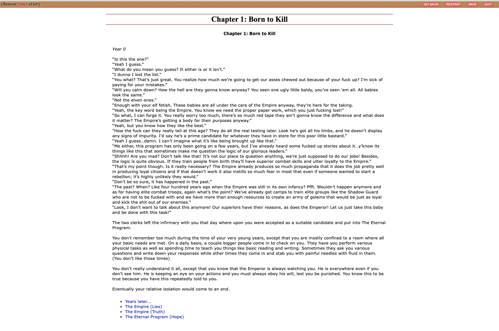

Blog Post 3
For my interactive narrative project, I decided to create my own choose your adventure story. Essentially, this would be a story where the reader assumes the role of the protagonist, and makes a series of choices determining the plot's outcome.
The most common example of a website that currently exists on my subject is 'chooseyourstory.com'. THe website allows users to write their own story games, as well as read and comment on other members stories, and discuss related content on a forum. While the scope of this website is much more broad than what I intend, it did provide some insight on how I could possibly format the game. Once you have selected a story to play, it links the possible paths you can take using a list at the bottom, each taking you to the coressponding step. This can be seen in the picture below.

I think having a similar format, with more design around the possible 'moves' would be something I can incorporate into my design, and help organize the user flow. Overall, I think for my design I plan to keep it simple and straightforward both to make it easier for the user to navigate and I to code.
Example websites: